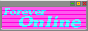
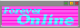

The Highs and Lows of Punk Rock Stardom (Mostly Lows)
Sunday, 29th September 2024
Previous
I'm writing this just before I go to sleep, I'm pretty tired. It was a rock and roll weekend. Yeterday and today I rehearsed with my band, and ended fucking up my voice really hard by singing Uno, Dos, Ultraviolento and drinking a lot through the day.
We took a break from the reahearsal to take adventage of the good weather, because the air was warmth and we craved for a car ride. We get into Seba's renault 12 and we went to buy some Resero wine, grapefruit soda and Rex cookies.
We headed up to the lake, the evening and the view were beautiful, and we decided to park the car and prepare the wine, but at that moment, we heard a knock on the bottom of the car. It was a small log on the ground, but it was nothing really. We decided to head up to a nicer place, so Seba decided to go down a slightly inclined descent, the right wheel was the first to go down, but when it had the weight of the majority of the car on it, a louder crash was heard than the previous one. This time it was something serious, the car could shift but it wouldn't move, one of the wheel arms had broken. Shit. The Renault 12 does not go backwards or forwards. We had to push it down. Seba's father arrived to save us, and helped us dump the car. We took it up the level crossing and the car was left near the tracks, waiting for Seba to pick it up on Monday to take it to the mechanic. At least the Resero was delicious haha.
Today we continue rehearsing, all the songs are going well, so we are ready to play. We will play on October 8, on the town's anniversary, where the largest stage you can play on in the city is set up. It's probably the biggest stage I'll ever play on in my life, so I want to put on a great show.


 
